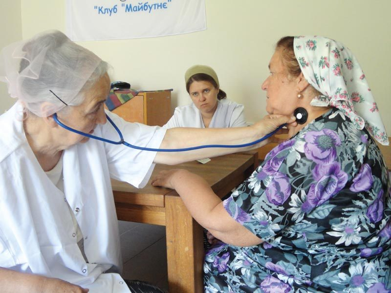
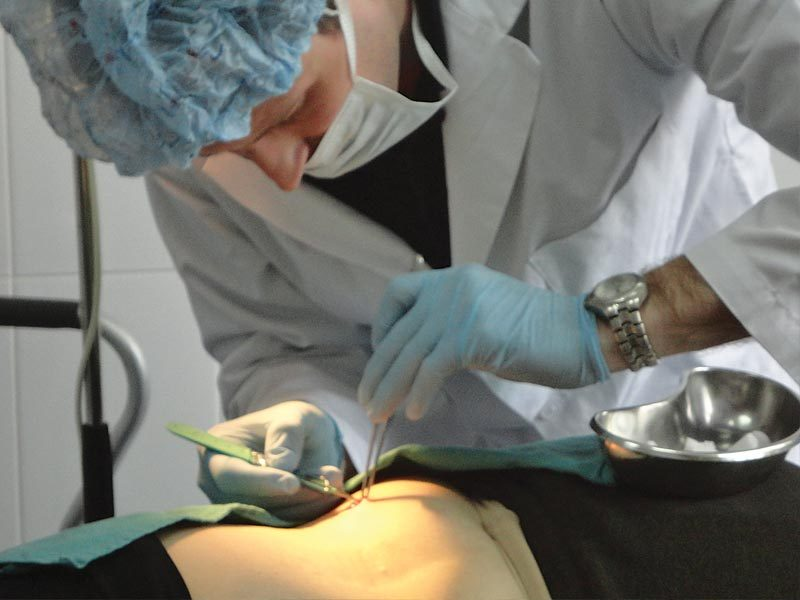
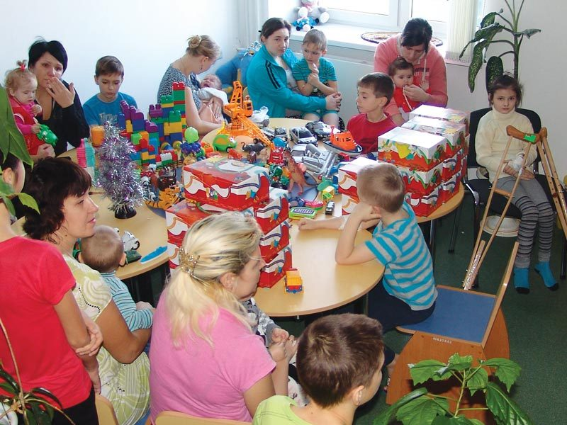
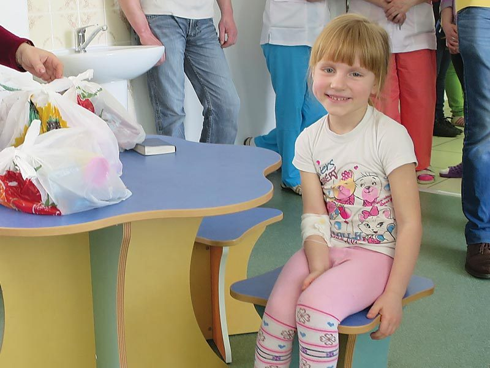
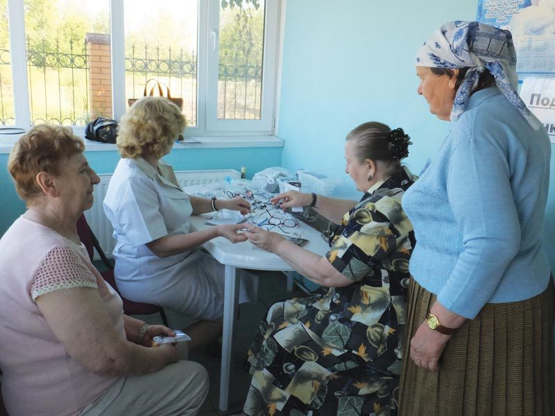
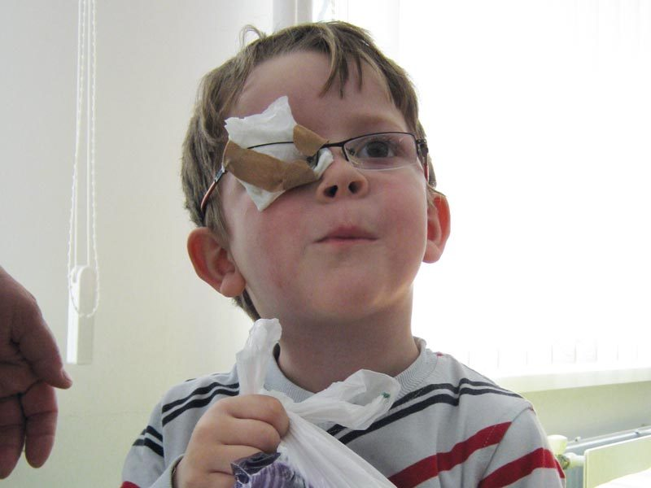

Good medical care is something many of us take for granted. In the villages where Hope Now works, it is often out of reach. Wages are low, pensions go unpaid, and a single course of treatment can cost more than a family sees in months. So we take the care to them — and share the love of Jesus while we do.
Mobile Medical Unit
With medical treatment and medicines being unaffordable, and too far to reach for remote villagers, the Mobile Medical Unit that Hope Now supports is a lifeline to many poor people.
The unit travels from village to village, taking trained medical staff to people who would otherwise see no one. For an older person living far from the nearest town, the team's visit may be their only sight of a doctor all year — a chance to be checked over, to get the medicines they need, and to be sent on to hospital if something more serious turns up. And every visit is a chance to show God's love in a way you can see and touch.

“Bringing hope by sharing the love of Jesus.”
Hope NowMedical Treatment Fund
Medical treatment in Ukraine is very expensive and costs have to be paid before treatment begins. Hope Now funds treatment for those who are unable to afford it.
Here the bill comes first: the money has to be found before an operation or a course of treatment can even begin. For a family with little or nothing coming in, that often means simply going without. The Medical Treatment Fund covers those costs, so that the people least able to pay aren't turned away.

Hospital visiting & support
Hope Now supports local hospitals with much-needed equipment and linen, and brings gifts to children on the wards at Easter and Christmas.
Volunteers call in regularly with small gifts and time to talk and pray. A friendly face and a present go a long way for a child facing a long stay on the ward — and for the parents sitting beside them.


Spectacles & walking sticks
Glasses and walking sticks are very much needed and appreciated by the elderly folk.
They sound like small things, but they're not. A pair of reading glasses or a steady walking stick can give an older person back their independence — and they're always received with real gratitude.


Why it matters
How you can help
Your gift keeps the Mobile Medical Unit on the road, pays for treatment that families can't, and puts gifts into the hands of children on hospital wards. However you give, it reaches someone real.